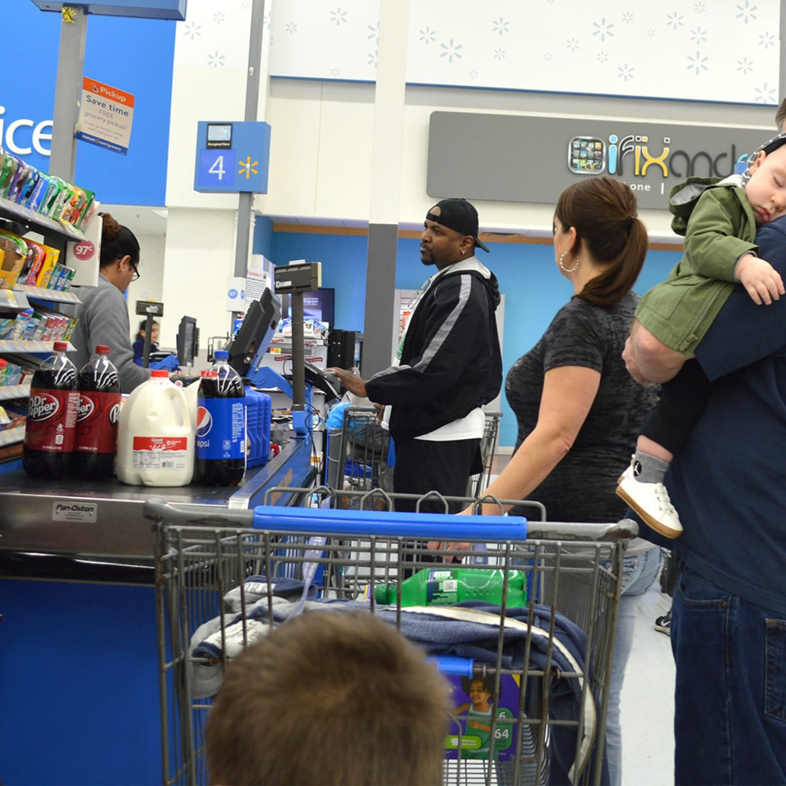

First-Come, First-Served (FCFS)
As the name suggests the First Come First Serve scheduling algorithm means that the process that requests the CPU first is allocated the CPU first. It is basically implemented using a First In First Out queue. It supports both non-preemptive and preemptive CPU scheduling algorithms
The FCFS algorithm schedules processes in the order they arrive. It’s simple but can lead to long waiting times for some processes.
Sample Analogy: Think of a line at a grocery store checkout counter. Customers are served in the exact order they arrive, regardless of how much they have in their cart.
